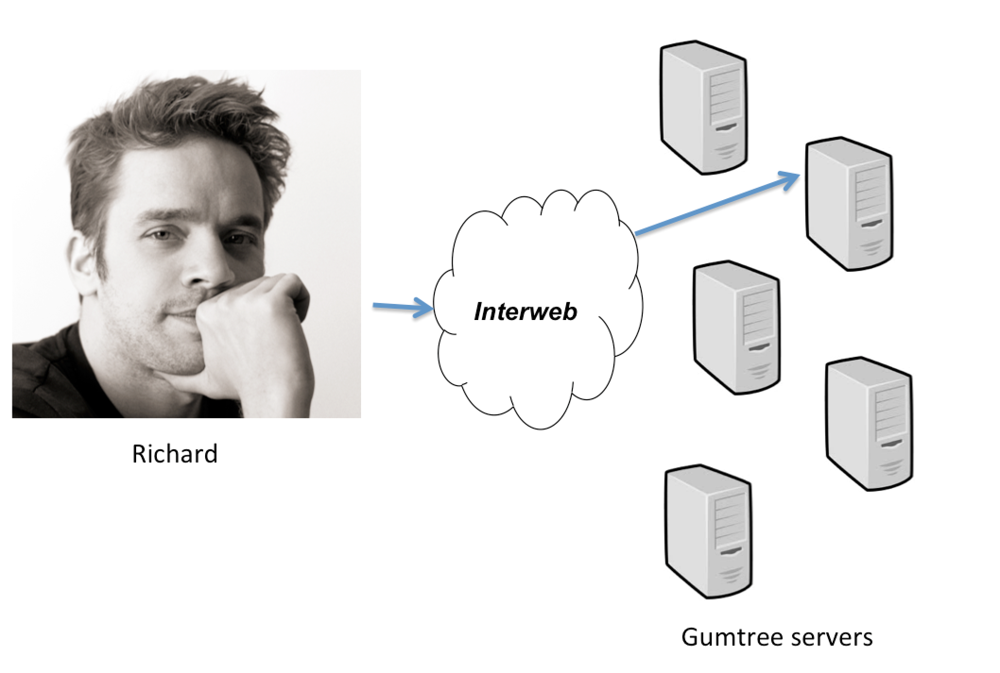
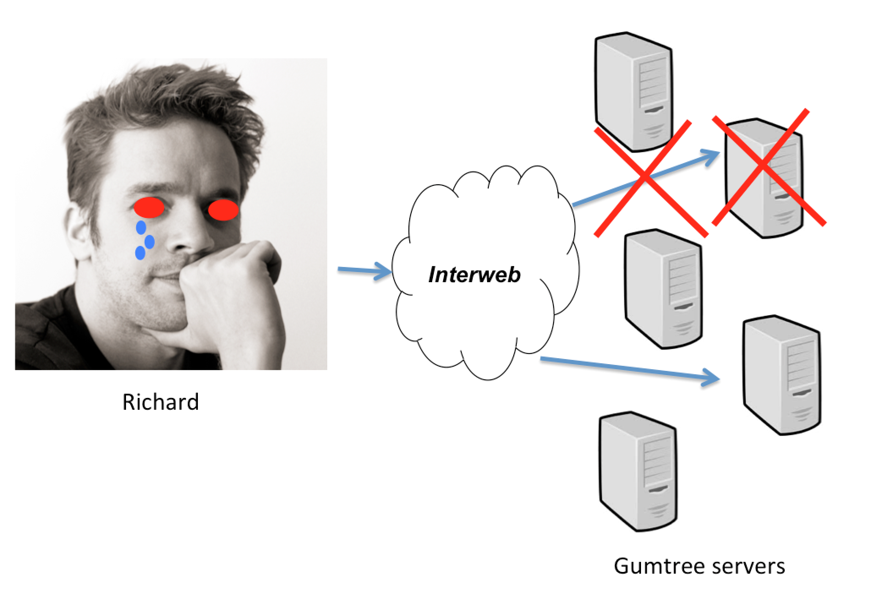

Sessions, not that sticky
Like many other websites with a large number of concurrent users, parts of our architecture have to be scaled horizontally. In doing this, we have a load balancer in front of many running instances of the same web application, and user requests will be spread across these instances. It is common and convenient in web development to store temporary user data in session for use between requests. Most of our architecture is written using Spring MVC which has great support for this via the use of session-scoped beans and flash attributes. Session data is, however, all in-memory and only available within the scope of a single running application. Any time a developer programs an application to write some data to the session, he/she is making the assumption that subsequent requests whom require access to this data, will come to that same instance. With the load balancer setup described at the start - it becomes difficult to pre-determine which instance is going to get any one request. One way to deal with this is to use 'sticky sessions' whereby a particular cookie is dropped in the user's browser, holding the session ID. The load balancer can then look for this cookie and maintain a mapping from this ID to the instance who is serving this particular user's session.

All well and good? But what if a particular instance of the application was misbehaving and needed to be restarted, or what if there was a new release of the application? Anytime you shut down a running application, it loses all its in-memory data. Any user whose session was being held by one instance, will have all their session data thrown away and this could be a very bad experience indeed.

Readers who use Gumtree to sell things will be familiar with the multi-step flow involved when posting an advert. On our desktop site such an activity involves 3 pages: one to pick a category; one to pick a location; and one to fill out all the details about their advert such as title, description, etc. Only when the user hits 'Post my ad' after filling out the form, is anything submitted to our API and saved to database. Until recently, before this button was clicked all the advert data was being built up in session. The entire Post Ad flow was reliant on sticky sessions and a resilient application. Other user flows, such as paying for features, or interacting with the Manage Ads page, were also implemented this way.
This meant any restart or release of this particular application had to be performed, where possible, at a time of minimal traffic so as to disrupt the lowest number of users - generally the early hours of the morning. As we strive for continuous deployment we are often ready with potentially many new releases of this component a day, so coordinating these was a nightmare whilst we had these restrictions in place. Sticky sessions had proved to be more trouble that they were worth, and something had to be done.
Tomcat 7 has support for multiple instances within the same container (see http://tomcat.apache.org/tomcat-7.0-doc/introduction.html). This means a new release of the application can be started whilst the old version is still running - any user who had a session on the old version will be stuck to that instance until their session expires. Once all such sessions have expired, the old instance can be safely shut down, leaving only the new version running. This would solve the problem of doing releases without user impact, however we would still need session stickiness in the load balancer and restarting any misbehaving instance would still kill off any user sessions attached to it.
In the end we opted to try Redis (http://redis.io) for storing all session data. Redis is essentially a simple key-value store with support for data types & collections, as well as supporting database-y concerns such as failover, sharding, monitoring etc. One concept that is very useful is that each key can be given a time-to-live (TTL), so any data written can behave in the same way as session data by expiring itself after a set period of time. Redis comes with client libraries for most common programming languages. As we are java, we used the Jedis library (https://github.com/xetorthio/jedis).
The application has now been enhanced such that for all places where we use session beans for writing data, we serialize the java object to JSON and write this to Redis too. Reads will come from Redis (values deserialized back into objects), but in the event of a failure the session will be called instead. Via configuration we can turn this off, or make it so that reads/writes are only done against Redis rather than session.
The keys are based on the 'editorId' for Post Ad flows (as seen in the URL which is of the form /postad/{editorId}/category). We have a similar concept for other flows - see checkouts for example. To prevent cross-pollination of user data - i.e. what if user1 manages to copy user2's editorId and uses it to take over their post ad flow - we prefix all a user's keys with a unique id that is generated when they first log in. This is stored in a cookie so that any request the user makes will have the same prefix.
The code is all abstracted such that anywhere that needs to read or write such data goes through the same service. Said service is not aware of the underlying storage - a 'SessionPersistenceStrategy' interface has the implementations for Redis, in-memory, and both. The actual write operations are done via a callback handler object. Another separate service takes responsibility for generating/retrieving the unique id from the user's cookies, this is initialized via a Spring HandlerInterceptor at the start of the request.
Jedis writeOperation:
public class JedisPersistenceStrategy implements SessionPersistenceStrategy {
private JedisPool jedisPool;
private SessionIdService sessionIdService;
….
@Override
public void writeOperation(
WriteOperationCallback writeOperationCallback) {
Jedis jedis = null;
try {
jedis = jedisPool.getResource();
if (jedis == null) {
throw new JedisConnectionException
("Cannot connect to Redis.");
}
writeOperationCallback.doWriteOperation(
new JedisWriteOperationHandler(
jedis,
sessionIdService.getUniqueSessionId()
// uniqueSessionId comes from a cookie
));
} catch (JedisException je) {
throw new SessionDataAccessException(je);
} catch (Exception je) {
throw new SessionDataAccessException(je);
} finally {
jedisPool.returnResource(jedis);
}
}
public class JedisWriteOperationHandler
implements WriteOperationHandler {
private Jedis jedis;
private String keyPrefix;
public JedisWriteOperationHandler(Jedis jedis,
String keyPrefix) {
this.jedis = jedis;
this.keyPrefix = keyPrefix;
}
@Override
public void set(String key, String value, int ttl) {
// formatKey is concatenating with '-' or something arbitrary
String fullKey = formatKey(keyPrefix, key);
jedis.set(fullKey, value);
jedis.expire(fullKey, ttl);
}
@Override
public void expire(String key, int ttl) {
String fullKey = formatKey(keyPrefix, key);
jedis.expire(fullKey, ttl);
}
@Override
public void del(String key) {
String fullKey = formatKey(keyPrefix, key);
jedis.del(fullKey);
}
}
}
Using writeOperation:
@Override
public void setPostAdData(final String editorId,
PostAdDetail postAdDetail) {
// writeToString is a utility method to turn a POJO into Json
final String json = writeToString(mapper, postAdDetail);
sessionPersistenceStrategy.writeOperation(
new WriteOperationCallback() {
@Override
public void doWriteOperation(WriteOperationHandler handler) {
handler.set(editorId, json, timeToLiveSeconds);
}
});
}
@Override
public void removePostAdData(final String editorId) {
sessionPersistenceStrategy.writeOperation(
new WriteOperationCallback() {
@Override
public void doWriteOperation(WriteOperationHandler handler) {
handler.del(editorId);
}
});
}
Jedis readOperation:
public class JedisPersistenceStrategy
implements SessionPersistenceStrategy {
private JedisPool jedisPool;
private SessionIdService sessionIdService;
….
@Override
public String readOperation(String key) {
String fullKey =
formatKey(sessionIdService.getUniqueSessionId(), key);
String value;
Jedis jedis = null;
try {
jedis = jedisPool.getResource();
if (jedis == null) {
throw new JedisConnectionException
("Cannot connect to Redis.");
}
value = jedis.get(fullKey);
} catch (JedisException je) {
throw new SessionDataAccessException(je);
} catch (Exception je) {
// Having to do this is a bit rubbish
throw new SessionDataAccessException(je);
} finally {
jedisPool.returnResource(jedis);
}
return value;
}
}
Using readOperation:
@Override
public PostAdDetail getPostAdData(String editorId) {
String json = sessionPersistenceStrategy.readOperation(editorId);
return readFromString(mapper, json, PostAdDetail.class);
}
In terms of our infrastructure, we have so far gone with a simple master to handle all reads & writes, plus two slaves which simply sync from the master and are only there as backups.
You may be wondering why we still write the data to the in-memory store as well as Redis, when the overall aim was to eliminate sticky sessions. You will have spotted that reads are done from Redis primarily, but only where this fails will the sessions be called upon. Sticky sessions are still on so as to make this possible. The reason why this has been done is as a safeguard for the possibility that Redis does not work properly. So far however, after 3 months in production, we have had no failures from Redis even with the single master handling everything. The best news though is that restarting or releasing a new version of the application now has zero user impact. Any session that was 'stuck' to a restarted instance will now be reassigned, and all the user's data will be retrievable from Redis.
The next steps will be to beef up the Redis infrastructure - Redis Sentinel (http://redis.io/topics/sentinel) is a common tool for this and this is an example setup https://github.com/noise/redis-sentinel-tests. Once we are confident that Redis can be our single point of failure, all mention of sessions within the application can be eliminated and stickiness can well and truly be turned off.